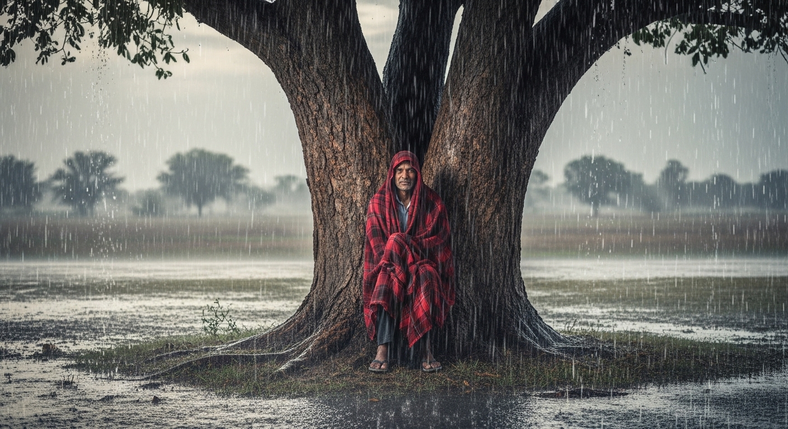

कवि: गिरिधर कविराय
भाषा: अवधी और ब्रज भाषा का मिश्रित रूप (व्यावहारिक भाषा)
सारांश: 'गिरिधर की कुंडलियाँ' अत्यंत लोकप्रिय और नीतिपरक रचनाएँ हैं। इनमें कवि ने अपने गहरे सांसारिक अनुभवों और जीवन की सच्चाइयों को सरल भाषा में व्यक्त किया है। इन कुंडलियों में लाठी की उपयोगिता, कंबल (कमरी) का महत्व, गुणों की कद्र, संसार के स्वार्थी व्यवहार और मजबूत सहारे के महत्व जैसी अमूल्य शिक्षाएँ दी गई हैं, जो आज के समय में भी पूरी तरह प्रासंगिक हैं।
शब्दार्थ: नारी = नाला; दावागीर = डराने वाला / विरोधी; धूर के बाठी = धूल भरे रास्तों के यात्री (राहगीर)।
प्रसंग: इस कुण्डली में गिरिधर कविराय ने एक साधारण सी 'लाठी' (डंडे) की बहुमुखी उपयोगिता और महत्व को अत्यंत सुंदर ढंग से समझाया है।
भावार्थ: कवि कहते हैं कि मनुष्य को हमेशा अपने साथ एक लाठी रखनी चाहिए क्योंकि इसमें अनेक गुण होते हैं और यह विपत्ति के समय बहुत काम आती है। रास्ते में चलते समय यदि कोई गहरी नदी या नाला आ जाए, तो लाठी के सहारे गहराई नाप कर सुरक्षित रूप से पार किया जा सकता है। यदि कोई खूँखार कुत्ता झपट्टा मारे, तो लाठी से उसे भगाया जा सकता है। इसके अतिरिक्त, यदि कोई शत्रु या लुटेरा (दावागीर) हमला कर दे, तो लाठी से उसका डटकर मुकाबला भी किया जा सकता है। अंत में कवि राहगीरों (धूर के बाठी) को उपदेश देते हुए कहते हैं कि अन्य सभी भारी और खतरनाक हथियारों को छोड़कर हमेशा अपने हाथ में एक मजबूत लाठी अवश्य रखनी चाहिए, क्योंकि यह हर संकट में रक्षक का काम करती है।
शब्दार्थ: कमरी = छोटा और सस्ता कंबल; वाफ्ता = रेशमी/कीमती वस्त्र; बकुचा = गठरी; दमरी = बहुत कम कीमत।
प्रसंग: इस कुण्डली में कवि ने एक सस्ते से काले कंबल (कमरी) की उपयोगिता बताते हुए स्पष्ट किया है कि कोई वस्तु सस्ती होने पर भी बहुत बहुमूल्य साबित हो सकती है।
भावार्थ: कवि कहते हैं कि यद्यपि काला कंबल (कमरी) बहुत ही सस्ते दामों में मिल जाता है, फिर भी वह दैनिक जीवन में बहुत अधिक काम आता है। जब हम कोई महंगे रेशमी या मलमल के कपड़े पहनकर बाहर निकलते हैं और अचानक बारिश (बूँद) या धूल आ जाए, तो इसी कंबल को ओढ़कर उन महंगे कपड़ों को खराब होने से बचाया जा सकता है (उनका मान रखा जा सकता है)। इसके अलावा, सफर में यदि कुछ सामान बाँधना हो तो इसी कंबल को बिछाकर गठरी (बकुचा) बनाई जा सकती है, और रात होने पर इसे ही झाड़कर सोने के लिए बिस्तर के रूप में इस्तेमाल किया जा सकता है। कवि कहते हैं कि यह कंबल कौड़ियों के भाव (थोरे दमरी) मिलता है, परंतु इसके फायदे अपार हैं। इसलिए मनुष्य को हमेशा एक कंबल अपने साथ रखना चाहिए, यह बहुत मर्यादा और सम्मान बचाने वाली वस्तु है।
शब्दार्थ: गाहक = ग्राहक/कद्रदान; सहस = हजारों; कागा = कौआ; कोकिला = कोयल; अपावन = अपवित्र/अप्रिय।
प्रसंग: इस कुण्डली में कवि ने बताया है कि समाज में मनुष्य के रूप-रंग की नहीं, बल्कि उसके गुणों की कद्र होती है।
भावार्थ: कवि गिरिधर कहते हैं कि इस संसार में गुणों की कद्र करने वाले (ग्राहक) हजारों लोग होते हैं। बिना गुणों वाले व्यक्ति को कोई भी पसंद नहीं करता और न ही सम्मान देता है। इसे समझाते हुए वे कौए और कोयल का उदाहरण देते हैं। कौआ और कोयल दोनों का रंग काला होता है और वे दिखने में लगभग एक जैसे होते हैं। परंतु जब वे बोलते हैं, तो उनकी आवाज सुनकर सब कुछ स्पष्ट हो जाता है। कोयल की मीठी आवाज़ (मधुर गुण) सुनकर वह सबको सुहावनी और प्यारी लगती है, जबकि कौए की कर्कश आवाज़ के कारण उसे कोई सुनना पसंद পণ্ডিত नहीं करता और उसे अपवित्र (अपावन) माना जाता है। कवि कहते हैं कि हे मन के ठाकुरों (अहंकारी मनुष्यों) यह बात भली-भाँति समझ लो कि बिना गुणों के कोई सम्मान नहीं पाता। समाज में हजारों लोग केवल अच्छे 'गुणों' के ही कद्रदान होते हैं।
शब्दार्थ: गाँठ में = जेब में/पास में; लेखा = नियम/स्वभाव; बेगरजी = निःस्वार्थ; बिरला = लाखों में एक/बहुत दुर्लभ।
प्रसंग: इस कुण्डली में कवि ने इस संसार के स्वार्थी व्यवहार और झूठी मित्रता की कड़वी सच्चाई को उजागर किया है।
भावार्थ: कवि कहते हैं कि हे ईश्वर! इस पूरे संसार में केवल मतलब (स्वार्थ) का ही व्यवहार चलता है। जब तक किसी व्यक्ति के पास धन-संपत्ति (गाँठ में पैसा) होती है, तब तक उसके अनेक मित्र बन जाते हैं। वे मित्र हमेशा उसके आगे-पीछे घूमते हैं और उसका साथ नहीं छोड़ते। परंतु जैसे ही उस व्यक्ति का धन समाप्त हो जाता है और वह गरीब हो जाता है, तो वही मित्र उसका साथ छोड़ देते हैं और यहाँ तक कि उससे सीधे मुँह बात करना भी पसंद नहीं करते। कवि गिरिधर कहते हैं कि हे भाई! इस स्वार्थी जगत (संसार) का यही नियम और यही सच्चाई है। इस पूरी दुनिया में ऐसा कोई विरला (लाखों में एक) ही सच्चा मित्र होता है, जो बिना किसी स्वार्थ (बेगरजी) के आपसे निश्छल और सच्चा प्रेम करता हो।
शब्दार्थ: लटपट = कष्ट सहकर/किसी प्रकार; बरु = चाहे; घामे = धूप में; तरु = पेड़; बयारि = तेज़ हवा/आँधी; जर = जड़।
प्रसंग: कवि ने एक पतले और कमजोर पेड़ के माध्यम से यह संदेश दिया है कि हमें जीवन में हमेशा मजबूत और सामर्थ्यवान व्यक्ति का ही आश्रय (सहारा) लेना चाहिए।
भावार्थ: कवि गिरिधर कहते हैं कि भले ही मनुष्य को अपने दिन कष्टों में बिताने पड़ें या चिलचिलाती धूप में ही क्यों न सोना पड़े, लेकिन उसे कभी भी ऐसे पेड़ की छाया में नहीं बैठना चाहिए जो बहुत पतला और कमज़ोर (तरु पतरो) हो। क्योंकि ऐसा पतला पेड़ विपत्ति के समय एक दिन धोखा अवश्य देगा। जिस दिन भयंकर आँधी-तूफान (बयारि) आएगा, वह कमज़ोर पेड़ अपनी जड़ से उखड़कर गिर जाएगा और उसके नीचे बैठे व्यक्ति की जान को भी खतरा हो सकता है। कवि सलाह देते हैं कि हमेशा एक मोटे, मजबूत और विशाल पेड़ की छाया का ही आश्रय लेना चाहिए। क्योंकि यदि किसी कारणवश उस मजबूत पेड़ के सारे पत्ते झड़ भी जाएँ, तब भी उसका विशाल तना और डालियाँ हमें धूप और तूफ़ान से बचाए रखेंगी। (यह एक रूपक है: जीवन में हमेशा मजबूत, ज्ञानी और शक्तिशाली लोगों का सहारा लेना चाहिए, वे बुरे वक्त में साथ नहीं छोड़ते)।
